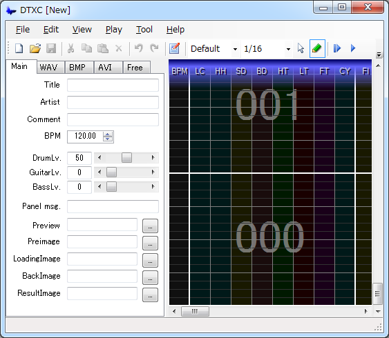

What's DTXCreator?
DTXCreator (DTXC) is a GUI editor to make DTX files.
The DTXC has similar GUI like BMSCreator or GDACreator.
However the DTXC can edit DTX files efficiently
because it support many DTX-spec-related features.

DTXCreator Overview
Requirements
- .NET Framework 2.0 and above must be required.
- DTXViewer should be required to playback DTX file from DTXCreator.
(DTXCreator works well even if you don't have DTXViewer.)
Installing and Uninstalling
- You don't have to install DTXCreator. Just unzip the archive and open DTXCreator.exe to start it.
- Delete all DTXCreator files to uninstall it. DTXCreator doesn't use registry.